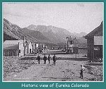
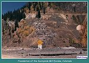

| Captain Charles Baker lead the original group of miners into the Silverton area in 1860. The miners made camp in Baker's Park, the present day site of Silverton. They did their placer mining in the area that would later be Eureka. They found color in the Animas River and some were getting as much as twenty-five cents per pan. Baker's party left the area to return to their respective homes with the coming of the Civil War in 1861. The war was to put exploration of the San Jauns on hold for a few more years. |
| Later in 1870, another party of miners entered the area for exploration purposes. Some men in this group were in the original party of 1860. They concentrated their efforts around Arastra Gulch. The first big strike in the area would be the Little Giant Mine. This discovery was to net the miners $4,000.00 in the first six weeks alone. A mill and mine buildings were constructed and the claim developed. These discoveries started a rush to the area that resulted in many more finds. As the men worked the hills above present day Eureka, several new claims were established. The largest of these was to be found above the shores of Lake Emma, above the site of Eureka. |

|
Eureka, Colorado looking towards Animas Forks.
This was the same year CW Gibbs began his survey for Silverton Northern Railroad
1889 (Image m0032)(143k) |
|
 |
Historic view of Eureka Colorado
(68k) |
| In the later years, several other mines would be discovered in the area. The Mastodon, Toltec, Tom Moore, Golden Fleece, Silver Wing and Lion Tunnel were the active mines in the early days. None of these mines would equal The Sunnyside and the later to be discovered Sunnyside Extension. The Sunnyside was discovered in 1873, and would continue to operate well into the latter half of the 20th century. Eureka came to depend on the Sunnyside for its existence and for most of its history 90% of the Sunnyside's employees lived in town. |
| The Sunnyside was owned by Judge Terry who purchased the mine from the original discoverers. Terry ran the mine with the most modern of technology until his death in 1910. After Judge Terry's death his wife and children operated the mine and mill until they sold the property to the U.S. Mining and Smelting Company in 1917. In 1912, there were 120 men on the payroll, milling 120 tons of ore per day or an average of one ton per man. By 1930, there were about 400 men on staff, producing 1,100 tons per day or an average of 2.75 tons per man. As the milling process and equipment have improved with time, only three men are required to run a typical 200-300 ton mill. In the early days a typical stamp mill required one man for every 10 to 20 stamps. |
| The Sunnyside Mill finally closed in 1941, due to a poor metal market and the coming of WWII. The mine and mill facilities were sold in 1948 for $225,000.00 and scrapped. I had the opportunity to talk with a gentleman who worked for the contractor that dismantled the mill in 1948. I only wish he had taken some photos of the process. I guess that would only occur to a few of us who think these things are interesting. To him, it was just another big pile of steel that needed to be scrapped. |
|
 |
Foundation of the Sunnyside Mill
Eureka, Colorado (84k) |

|
Sunnyside Tram Tension Station
Eureka Gulch (142k) |
| Eureka had to depend on wagons to freight the product of the mill to Silverton in the early days. In 1895 Otto Mears formed a new railroad that would serve Eureka and eventually neighboring Animas Forks. The Silverton Northern ran its new line to Eureka and greatly reduced costs of transportation. The railroad ran passenger service to Eureka allowing the miners and mill workers to live in Silverton. In the final years of operation, the SNRR operated a railcar that was unique in design and a favorite of the miners. The little railbus was called "The Casey Jones." It was built in the shops at the Sunnyside mill, and as of my last visit could be seen at the San Jaun Historical Society's museum in Silverton. |
| It is just a short 9 mile trip from Silverton to the former site of Eureka. The road can be traveled by automobile in good weather, and it is just five more miles to Animas Forks. If in the Silverton area, make the trip up to Eureka. If you have a good 4X4 vehicle take the time to check out some of the trails up into the mountains around Eureka and Animas Forks. I have made a few of these trips and found them very interesting. Many sites of former mining and railroad activity are easily identified. |